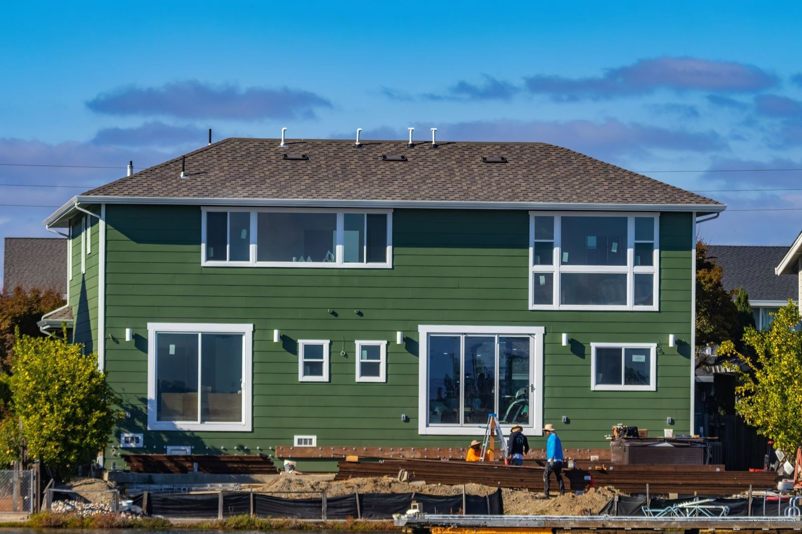
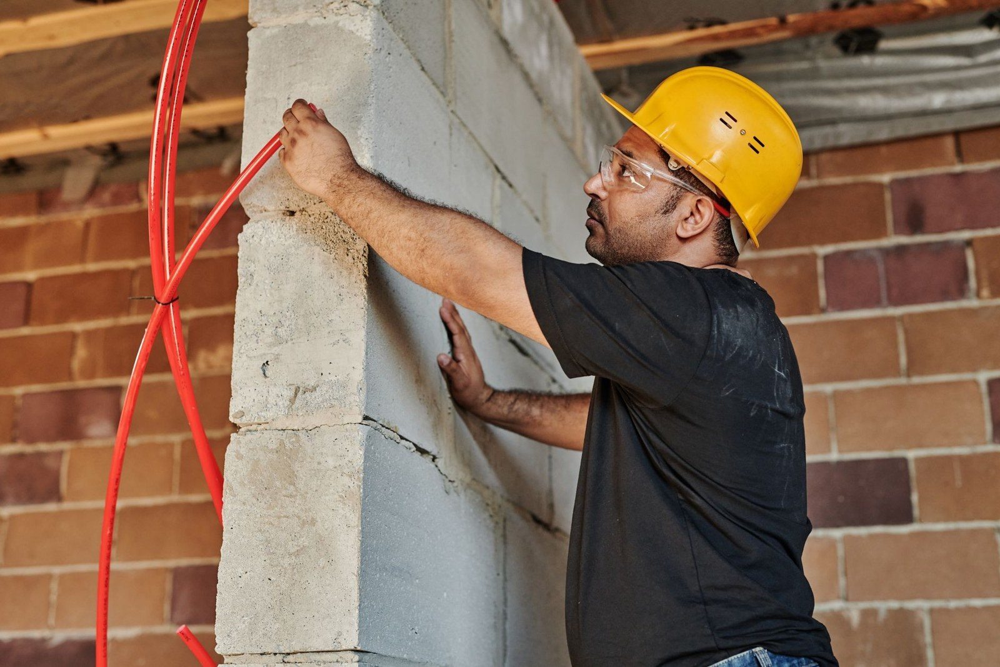

Zakres robót
Od wykopu po wykończenie. Każdą pozycję wyceniamy po oględzinach, a cenę i termin wpisujemy do umowy.
Robimy roboty ogólnobudowlane w Płocku i okolicy: wznoszenie budynków, dachy, instalacje i wykończenia. Możesz zlecić nam całą budowę albo jeden etap - wtedy wchodzimy między ekipy, które już masz, i ustalamy z nimi kolejność.
Każdą pozycję wyceniamy po oględzinach. Kosztorys dostajesz rozpisany na pozycje, żebyś wiedział, za co płacisz i co można z zakresu wyjąć, jeśli budżet się nie spina.

Budowa domów
Prowadzimy budowę domu jednorodzinnego od wytyczenia fundamentów po stan deweloperski albo pod klucz. Pilnujemy zgodności z projektem, zamawiamy materiały z wyprzedzeniem i układamy harmonogram tak, żeby żadna ekipa nie czekała na poprzednią.
- Wykopy, ławy i ściany fundamentowe z izolacją
- Ściany nośne, stropy, nadproża i kominy
- Więźba i pokrycie dachu
- Stolarka okienna i drzwiowa, elewacja
- Wykończenie pod klucz, jeśli taki jest zakres umowy
Chcesz wiedzieć, ile to wyjdzie? Umów oględziny - przyjedziemy, zmierzymy i rozpiszemy kosztorys na pozycje.
Stany surowe
Stan surowy otwarty albo zamknięty - w zależności od tego, co planujesz robić dalej własnymi siłami. Murujemy z pustaka ceramicznego, silikatu albo betonu komórkowego, zawsze z tego, co przewiduje projekt.
- Ławy i ściany fundamentowe, izolacja przeciwwilgociowa
- Ściany konstrukcyjne i działowe
- Stropy monolityczne i gęstożebrowe, schody
- Kominy i wieńce
- Dach z pokryciem, jeśli zakres obejmuje stan zamknięty
Masz projekt? Prześlij go przez formularz, a oddzwonimy z pytaniami o zakres.


Konstrukcje i pokrycia dachowe
Więźba, łaty i kontrłaty, membrana, pokrycie z dachówki albo blachy, obróbki blacharskie i rynny. Jedna ekipa prowadzi dach od krokwi po kalenicę, więc nie ma przerzucania odpowiedzialności za przeciek.
- Więźba dachowa i ciesielka
- Dachówka ceramiczna, betonowa, blachodachówka, blacha na rąbek
- Membrany i papy na dachach płaskich
- Obróbki komina, kosza, kalenicy i pasów nadrynnowych
- Rynny, rury spustowe, podbitki i okna dachowe
Przeciek albo pilna naprawa? Najszybciej pod telefonem: +48 608 725 888.
Instalacje elektryczne i hydrauliczne
Prąd, woda, kanalizacja i ogrzewanie w nowym domu albo wymiana starych instalacji przy remoncie. Instalacje prowadzimy zgodnie z projektem, a po robocie zostaje dokumentacja i pomiary.
- Instalacja elektryczna z rozdzielnicą i pomiarami
- Woda użytkowa i kanalizacja
- Ogrzewanie: grzejniki albo podłogówka
- Przygotowanie pod pompę ciepła i fotowoltaikę
- Wymiana instalacji w mieszkaniu przy remoncie
Wycenę tego zakresu robimy po oględzinach. Umów termin - dojazd na oględziny nic nie kosztuje.


Prace murarskie i tynkarskie
Roboty, na które trudno znaleźć ekipę, bo są za małe dla dużych firm: ściana działowa, komin, murowane ogrodzenie, tynk po wymianie instalacji. Bierzemy je, jeśli mamy wolne okno między etapami większych budów.
- Ściany działowe z pustaka, bloczka i płyty
- Kominy, przewody wentylacyjne, wieńce
- Tynki maszynowe i tradycyjne, gładzie
- Murowane ogrodzenia i słupki
- Podbudowy, wylewki i posadzki
Drobne roboty bierzemy między etapami większych budów. Napisz, co jest do zrobienia.
Remonty i modernizacje
Remont w mieszkaniu, w którym mieszkasz, to inna robota niż pusty plac. Dzielimy go na etapy, ustalamy godziny pracy i zabezpieczamy to, co zostaje na miejscu.
- Remonty mieszkań i domów, także etapami
- Wymiana instalacji elektrycznej i wodno-kanalizacyjnej
- Przebudowa ścian, nowe otwory i nadproża
- Łazienki i kuchnie od demontażu po biały montaż
- Docieplenia i odświeżenie elewacji
Remont planujemy razem z Tobą: zakres, etapy i godziny pracy. Umów oględziny.

Nie wiesz, w którą pozycję wpada Twoja robota?
Zadzwoń i opisz w dwóch zdaniach, co jest do zrobienia. Powiemy wprost, czy to bierzemy, i kiedy możemy przyjechać obejrzeć.